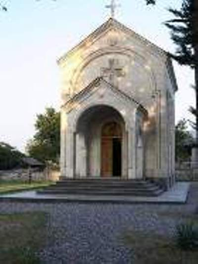
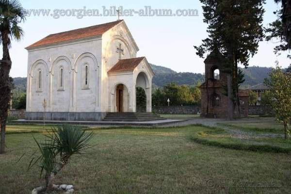

შუხუთის წმ. გიორგის სახელობის ეკლესია
2000 წელს ლანჩხუთის მუნიციპალიტეტის სოფ. შუხუთში საფუძველი ჩაეყარა წმ. გიორგის სახელობის ტაძრის მშენებლობას, რომელიც 2001 წელს ეკურთხა. ტაძრის წინამძღვარია დეკანოზი მამა საბა ჟღენტი. ტაძრის აშენებაში მნიშვნელოვანი წვლილი მიუძრვის სოფლის მკვიდრს ბატონ თეიმურაზ ჩხაიძეს. როგორც მამა საბა ამბობს ტაძრის აშენება უკავშირდება სოფ. შუხუთში ძველად არსებულ წმ. გიორგის სახელობის ტაძარს, რომელმაც სამწუხაროდ ჩვენამდე მხოლოდ ნანგრევების სახით მოაღწია. ტაძარი მოხატულია დავით ჯიბლაძის მიერ, რომელმაც აღნიშნული სამუშაოები მამა საბას თხოვნით შეასრულა. შიდა ხის კარედი ხელით არის მოჩუქურთმებული. ტაძრის გარე ფასადი მოპირკეთებულია ქართული თეთრი ქვით. ტაძარში ასევე ინახება წმინდა ნაწილი, რომელიც აღმოჩენილი იქნა სოფ. შუხუთში უკვე ნანგრევებად ქცეული წმ მარინეს ტაძირს ტრაპეზის ქვის ქვეშ.
 